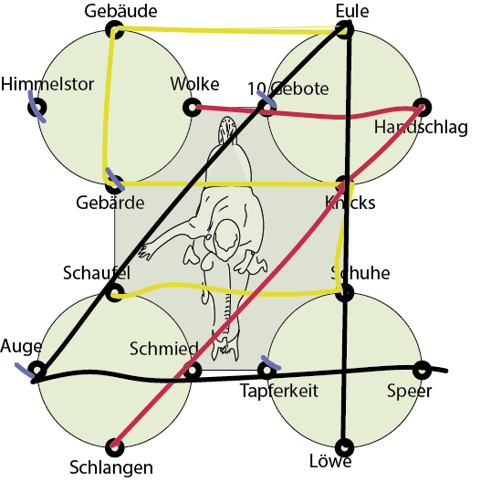
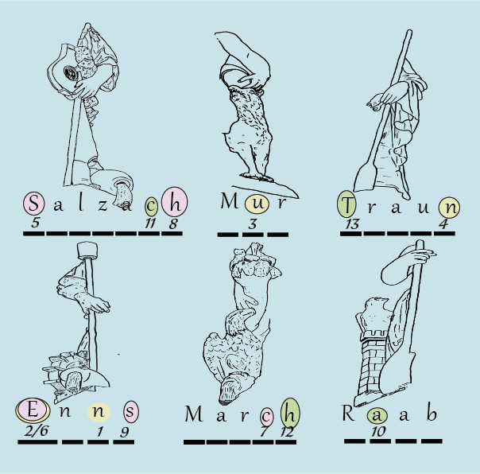
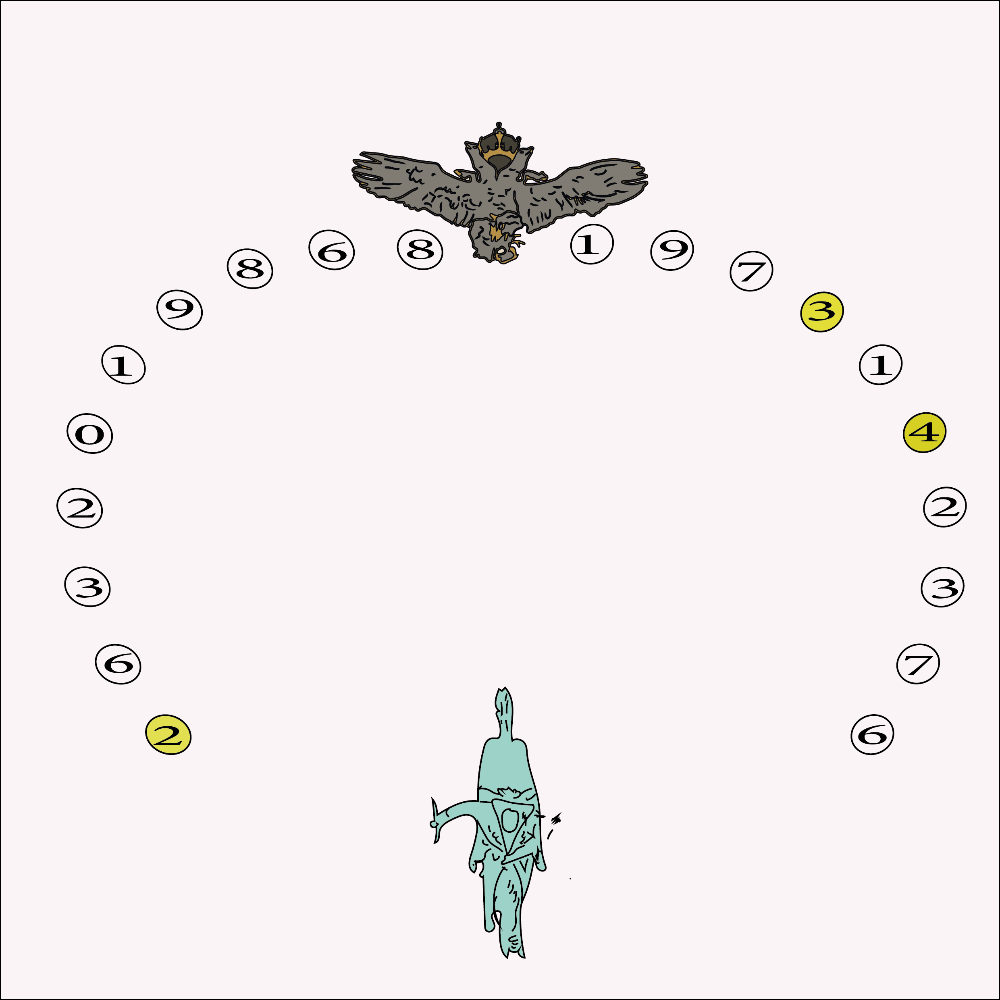
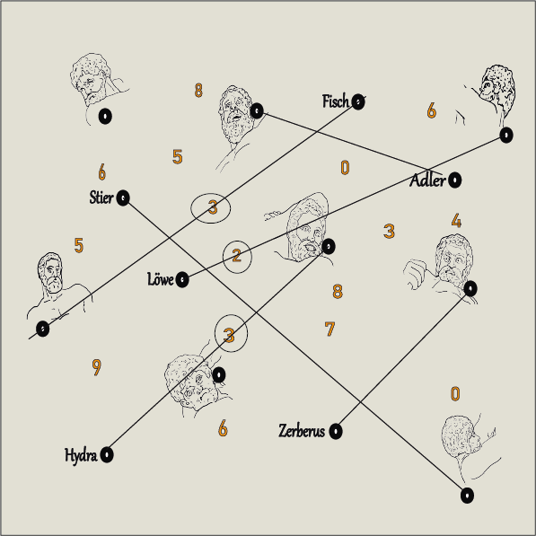
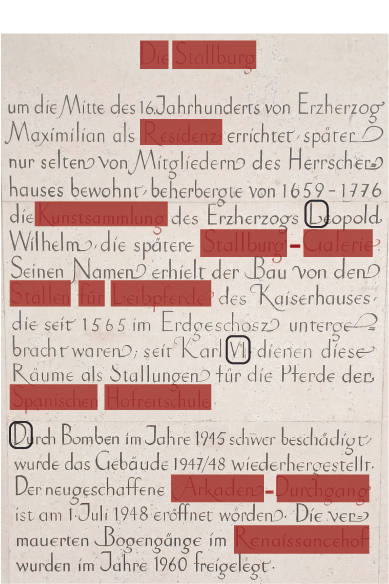
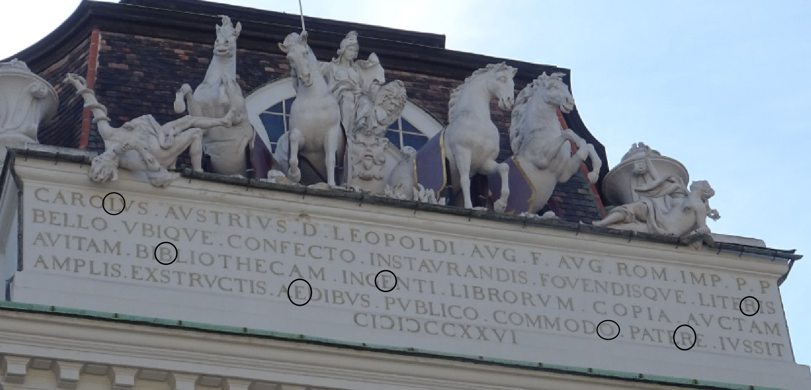

Befindest du dich am Josefsplatz? ------ Dann schau dir die 16 Medaillons an den Eckpfeilern rund um die Statue genau an. Erkennst du die kleinen Details aus den Zeichnungen wieder?'
Wenn du erkannt hast, zu welchem Medaillon die Zeichnungen passen, trage dies auf dem Plan in der Broschüre ein. Verbinde dann die kleinen Punkte so miteinander wie es die Bildreihenfolge in der Broschüre angibt. Kannst du eine Zahl erkennen?
Wenn du die einzelnen Linien betrachtest, kannst du darin drei Zahlen lesen. Der Reihenfolge, wie sie in der Broschüre erscheinen, folgend, ergeben sich die Zahlen: Vier-Fünf-Sieben.

Befindest du dich am Helmut-Zilk-Platz (Albertina) vor dem Albrechtsbrunnen? Dann schau dir rechts und links vom Brunnen die sechs Kinderstatuen an. Erkennst du hier die Details aus den Zeichnungen wieder?
Die Kinderstatuen wurden nach Flüssen in Österreich benannt. Trage ihre Namen in der Broschüre ein. Kannst du nun die Lösung lesen?
Die Zahlen von 1 bis 13 entsprechen den jeweiligen Buchstaben, die sich aus den Flussnamen herleiten. Der Buchstabe E aus Enns wird dabei zwei Mal verwendet. Die Antwort lautet also : Neun - Sechs - Acht.

Befindest du dich vor der Neuen Burg beim Prinz-Eugen Reiterdenkmal? Neben dem Haupteingang stehen rechts und links je 10 Statuen.
Die drei gesuchten Figuren zeichnen sich durch die jeweils angegebenen Merkmale aus. Schau genau oder geh die Statuen einzeln durch. Die jeweiligen Beschreibungen sind nur einer Statue zuordenbar.
Gereiht von der ersten zur dritten Figur und nach ihrem Standort in Relation zum Reiterstandbild und dem Eingang zur Hofburg ergibt sich die Antwort: Vier - Drei - Zwei.

Befindest du dich beim Kaiser Franz-Josef Denkmal? Dann suche nach der Sonnenuhr. Die 12 steht nicht in der Mitte sondern leicht versetzt auf der rechten Seite. Das bedeutet, dass sie nach Südost ausgerichtet ist. Auch der Text hat dir diesen Hinweis mit dem groß geschriebenen SO schon gegeben. Kannst du ableiten welche Statue sich im Süden befindet?
Die Statue die das Kreuz trägt ist im Süden. Hier musst du also beginnen. Es wird ein Symbolträger gesucht. Was hat die Statue in der Hand? Und was kann L und R bedeuten? .
L und R beziehen sich auf Rechts und Links. Es geht darum, was die Statuen und die Figuren auf den Reliefs in der jeweiligen Hand tragen. Es sind acht Gegenstände gefragt - und es gibt acht Reihen mit Symbolen. "Durchblicken" ist hier wörtlich gemeint.
Wenn du die Gegenstände in der Symboltabelle markierst und dann das Blatt gegen das Licht hälst, kannst du sehen, dass sich auf der Rückseite derselbigen Zahlen befinden. "Zahlenfolge einhaltend" gibt dir den Hinwis auf die Reihung.
Die Reihenfolge der Lösungszahlen ergibt sich aus der Reihenfolge der Symbole in der Anleitung (1-8), aufsteigend. Der gesuchte Code ist also Drei-Drei-Vier und die Reihenfolge der Symbole ist: Kreuz - Speer - Zepter - Schild - Waage - Schriftrolle - Keule - Stab
Befindest du dich am Michaelerplatz oder In der Burg (Kaiser Franz-Josef Denkmal)? Dann betrachte die Statuen des Herkules genau.
Welcher Gesichtsausdruck passt zum Kampf mit welchem Tier - und ja es geht nur um den Kampf mit Tieren, nicht Menschen. Verbinde Tiername und Gesichtsausdruck. Welche Zahlen werden dabei durchgestrichen?
Die durchgestrichenen Zahlen von oben nach unten gelesen ergeben die Zahl: Drei- Zwei - Drei.

Befindest du dich in der Reitschulgasse vor der Stallburg (Hofreitschule)? Dort findest du eine Informationstafel mit dem Titel "Die Stallburg".
Die Wörter in roter Schrift decken sich mit den roten Rechtecken in der Broschüre. Gesucht sind die Buchstaben die sich in den drei schwarzen Feldern befinden? Welche sind das? Welche Art zu zählen ist hier gesucht? Es ist eine alte Art zu zählen.
Die gesuchten Zahlen sind römische Zahlen. VI steht dabei für 6, das L ist 50 und D steht für 500. Diese Zahlen zusammengezählt ergeben die Lösung: Fünf-Fünf-Sechs.

Befindets du dich am Josefsplatz? Trage die Lösungen aus den letzten Rätseln in der Broschüre ein und vervollständige die Rechnungen. Dann schau nach oben, suche nach einer gut sichtbaren Inschrift. Wie kann man aus 1-1-5 den Buchstaben L ableiten?
"Die Lage ist gezählt" bedeutet, dass jeder gesuchte Buchstabe an einer bestimmten Stelle der Inschrift steht. Es gilt: Reihe-Wort-Buchstabe
Die erste Zahl benennt die Reihe (insgesamt gibt es vier), die Zweite das Wort in dieser Reihe, die dritte Zahl benennt den jeweiligen Buchstaben in diesem Wort.

Alle Buchstaben zusammen von oben nach unten gelesen ergeben das gesuchte Lösungswort: L - o - r - b - e - e - r